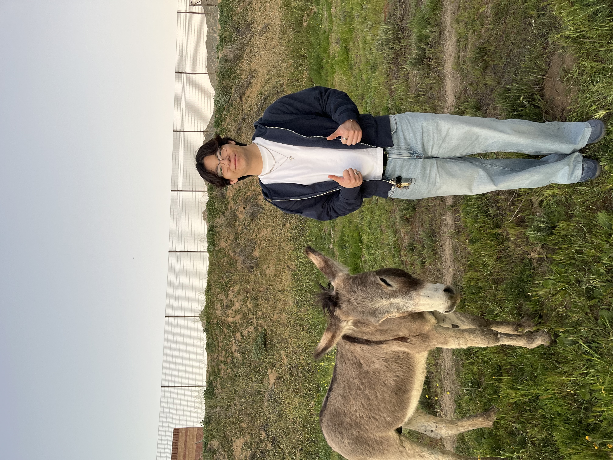

I have always known I wanted to go into healthcare. My dad has been a family physician for nearly all my life, and in the last couple years has also started working as Medical Director for a clinic. He is my main inspiration for going into healthcare. A quote that my grandpa passed down to my dad, and that my dad has passed down to me is, "There are 2 types of people in the world, those who need help and those who help others. Be the person who helps others." My dad has inspired me to work hard and to be generous and grateful.
During my freshman year of college, I decided I wanted to specifically go into physical therapy. My interest in the gym and in how the human body moves and functions were the main things that peaked my interest in physical therapy. I later volunteered and worked at a therapy clinic as an aide, which increased my interest in becoming a physical therapist.